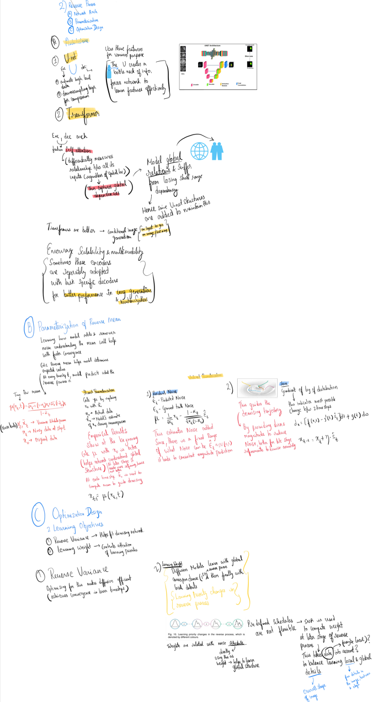

Reverse Pass - Part 2: Design Fundamentals of Diffusion Models
Diving deeper into the Reverse Process of Diffusion Models—key aspects, architectural choices, and optimization strategies.
Introduction
Continuing from where we left off in Part 1, we’re going to talk about the next integral process where training happens: The Reverse Process. The focus is on training the model component (denoising network) to remove noise and finally arrive at X₀ (the original image). The design components governing this process are:
1. Network Architecture
The two popular architectures used are U-Net and Transformer because of their capacity to model complex relationships in a wide range of applications:
U-Net
This is a U-shaped encoder-decoder architecture. It creates a bottleneck of information, which forces the network to learn features effectively.
- Encoder: It extracts high-level data and sends it to a downsampling layer for compression.
- Decoder: Uses the above features based on specific applications.
Transformer
This architecture also has an encoder/decoder structure.
- Encoder: Consists of a self-attention layer, which measures relationships between data, regardless of spatial location. Hence, it’s better able to capture global dependencies (e.g., the overall shape of an object). However, being able to capture these global relationships comes at the cost of losing short-range relationships (the minute details of specific objects). To combat this, some U-net structures are added to maintain this aspect as well.
- Decoder: Uses the above features for specific applications.
2. Parameterization of Reverse Mean
Learning the patterns of how the model adds and removes noise, i.e., the mean, will help with faster convergence and hence quicker reverse process, leading to faster training times. Calculating the Reverse Mean (μ) helps the model determine the expected value at each timestep to accurately denoise the image.
Reverse Mean Formula:
$$\mu(x_{t}, t) := \frac{\sqrt{\alpha_{t-1}(1 - \alpha_{t-1})} \cdot x_t + \sqrt{\alpha_{t-1}(1 - \alpha_t)} \cdot x_0}{1 - \alpha_{t-1}}$$
- αt-1, αt: Variance Schedule parameters
- xt: Noisy data at time step t
- x0: Original data
There are two ways of parameterization:
- Direct Parameterization: Calculate μ by replacing x₀ (actual X₀) with ĥx₀ (the model’s estimate of X₀ during the reverse process).
- Indirect Parameterization:
- Residual Noise: This predicts the noise added in the forward process and subtracts this from the image to arrive at X₀. This estimates the noise added. Since there’s a fixed range of noise values, it leads to a consistent prediction of magnitude.
3. Optimization Design on Learning Objective
The learning objective is the function that the model aims to optimize during training. There are different strategies involved to improve the effectiveness of the denoising network:
- Reverse Variance: An appropriate reverse variance minimizes the discrepancy between the forward and reverse processes, reducing the time steps required to converge.
- Learning Weight: This is used to balance learning priorities in training, controlling the focus on global vs. local details of data at different stages of the reverse process.
Mindmap
